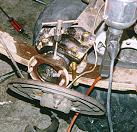

If you are tired of tearing apart your axles to repack the bearings, add a zerk fitting next time you have them apart so you can repack your bearings in seconds. Many of the new Jeeps have sealed bearings, so adding zerks is pointless for them, but for older Jeeps such as CJs, full size Jeep trucks, etc. a zerk can be a real time saver. Some early Jeeps came with zerks from the factory.
Adding a zerk is a very simple process, here are the basics:
After everything has been installed, you can use a regular grease gun to pack the bearings. You may want to pull the drum to keep an eye on the outer seal. If you overpack the bearings, grease will ooze out and ruin your brake shoes. Greasy shoes have very poor stopping power.
On the older military Jeeps such as the M38A1, they had two zerks on either end. With two zerks, you can remove one and pump grease in the other. This forces all the old grease out and you don't have to worry about over packing the bearings. Thanks to John for mentioning this.